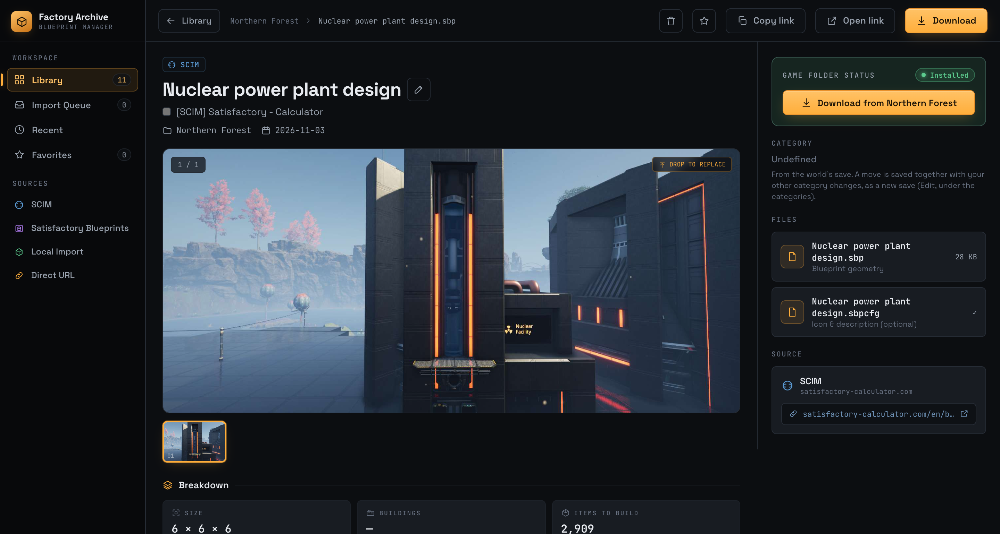
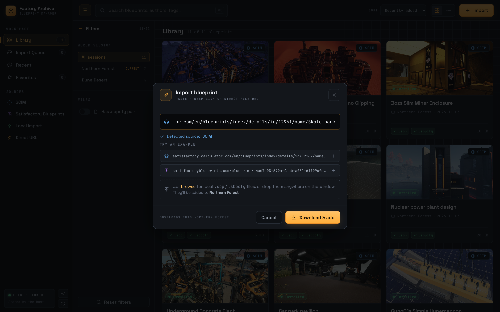
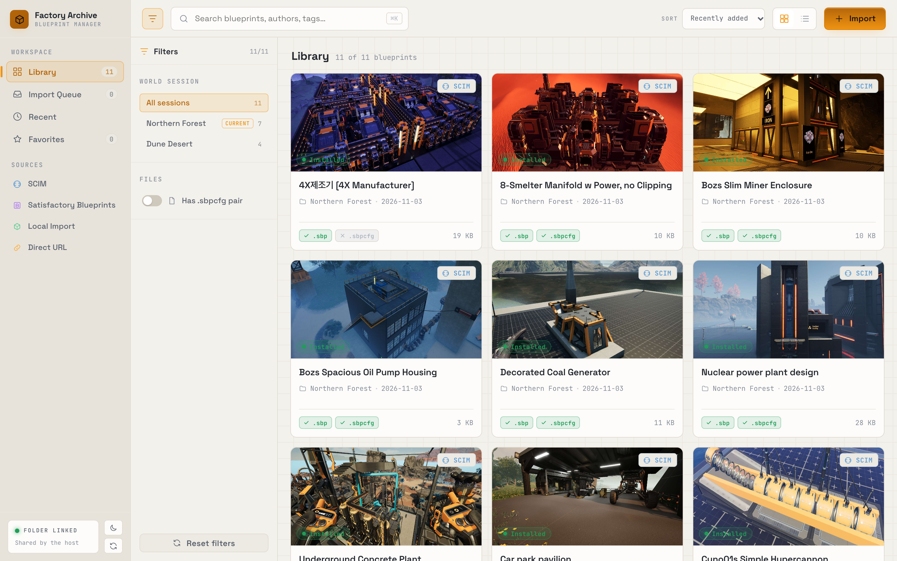

Every blueprint, one archive.
Collect, import, organize and share your .sbp blueprints across worlds and with friends, without digging through save folders.
Built around how the game actually stores blueprints.
Blueprints live in one folder per world. Factory Archive reads that folder directly and keeps everything else out of it.
Your real library
Reads the .sbp files in your game folder, grouped by world, and opens on the world you're playing.
Import from a link
Paste a SCIM or Satisfactory Blueprints page, or a direct file link. The blueprint lands in your world with its picture and details.
See what's inside
Size, material cost and buildings, read straight from the file. Works offline, for any blueprint.
Find anything fast
Search with Ctrl/⌘ K, filter by tag or world, star favorites and copy blueprints between worlds.
Share on your LAN
Friends open your library in their browser, or join from their own app in client mode.
Back up to WebDAV
Sync to InfiniCLOUD, Nextcloud, Synology or your own server. Every upload is read back and checked.
Know the cost before you place it.
Open any blueprint for a breakdown read from the file itself, not from a website.
- Dimensions, material cost and building counts
- Author, description, tags and source link
- Rename, favorite, or copy to another world

Paste a link. Done.
The app finds the real download on the page and writes it straight into your world. If it can't find one, it says so and writes nothing.
- SCIM pages, SCIM user profiles and Satisfactory Blueprints
- Direct .sbp links, or drag files onto the window
- Details stored in the app's own folder, never in the game's

Blueprints belong to the world. Share the world's.
In multiplayer, blueprints live on the host's PC. Turn on Share on LAN and friends get the same app in their browser, working on your folder.
- Browse, download, add and organize together
- Client mode finds a host on your network by itself
- Light and dark themes, on every device

Three steps from link to factory floor.
Install and open
The app finds your blueprints folder on its own. On a Mac it looks in CrossOver for your game data.
Add blueprints
Paste a link, drop files on the window, or copy favorites in from another world.
Reload your save
Load the world again from the main menu. No restart, and your new blueprints are there.
Get Factory Archive
Free and open source. Installed copies update themselves.
First launch: the builds aren't code-signed yet
Windows: if SmartScreen warns, click More info → Run anyway.
macOS: right-click the app → Open, or run:
xattr -dr com.apple.quarantine "/Applications/Factory Archive.app"